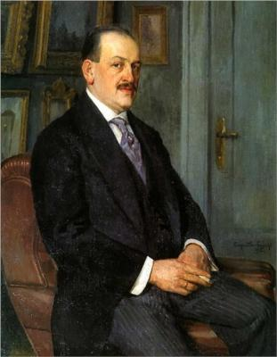
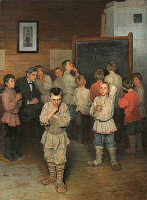

Оленино
Культура
1. Николай Петрович Богданов-Бельский (1868-1945)-русский художник

Н.П. Богданов-Бельский родился 8 (20) декабря 1868 года в селе Шитики Бельского уезда Смоленской губернии (ныне Оленинский р-н Тверской области). В фамилии художника спрессована история происхождения – Богом данный (незаконнорожденный) сын бедной бобылки из Бельского уезда. Вторую часть фамилии Николай Петрович получил в 1903 году, когда стал академиком: «мою простонародную фамилию как бы облагородил сам государь (Николай II), вписав ее собственноручно в диплом через дефис – Бельский».
С 1884 по 1889 гг. Николай Петрович учился в Московском училище живописи, ваяния и зодчества, где его учителями были художники В.Д. Поленов, В.Е. Маковский, И.М. Прянишников. В возрасте 16-ти лет в 1884 году Богданов-Бельский впервые принял участие в выставке с картиной «Еловый лес», которую похвалили Поленов и Левитан. Картину купил известный фабрикант и коллекционер Сапожников.
23 июня 2000 г. в селе Татево Оленинского района был торжественно открыт музей художника.
Его известные картины: «Устный счет», «У дверей школы».
